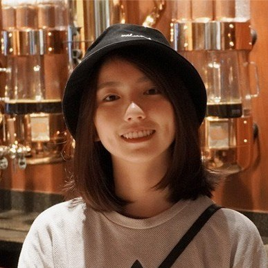

Senior Research Scientist · SenseTime
I am a Senior Research Scientist at SenseTime in Singapore, where I work on visual generation, multimodal models and embodied intelligence.
I received my Ph.D. from MMLab@NTU, Nanyang Technological University, advised by Prof. Chen Change Loy and Prof. Jianfei Cai. Before SenseTime, I was a Data Scientist at NVIDIA. I also received my bachelor's degree in Computer Science from NTU.

My research is in computer vision, with recent work on image and video generation, unified multimodal models and video matting. More recently, I have been working on embodied intelligence: check out our empirical study Has GPT-6-Astra Achieved Embodied Intelligence? and a customized world model, named Mundo.
Full list on Google Scholar.